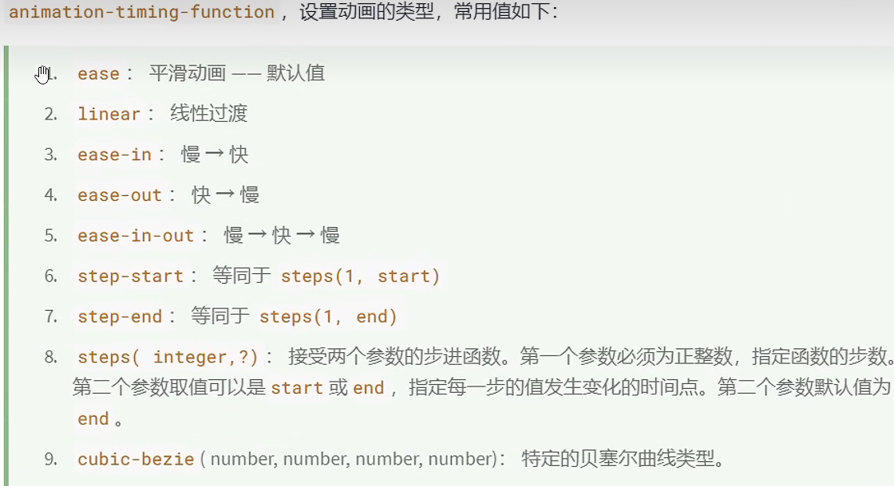

关键帧 @keyframes
指的是起关键性的两到三帧
动画样式类型见下图

指定动画方向-
normal 正常方向---默认
reverse 反方向运行
alternate 先正常运行再反方向运行，并持续交替运行
alternate-reverse 先反方向再正方向，并持续交替运行
动画复合属性
animation: name duration delay 动画类型 播放次数 动画方向 停止状态;
自行车小案例